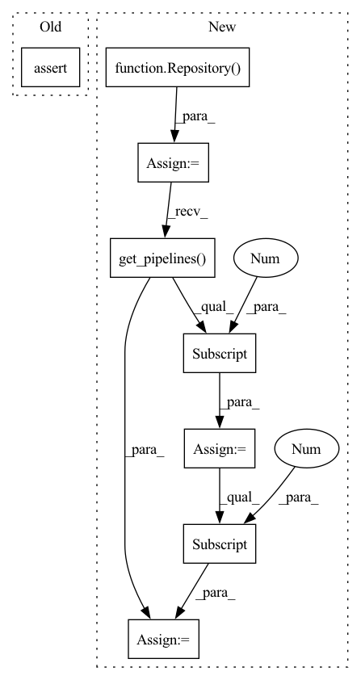

Pattern ID :21027
Before Change
assert local_example.path.joinpath(
".zen/local_store/tf_trainer/output/3/saved_model.pb"
).is_file()
assert local_example.path.joinpath(
".zen/local_store/torch_trainer/output/7/entire_model.pt"
).is_file()
assert local_example.path.joinpath(After Change
local_example.run_example(bash_file=str(bash_script_location), force=True)
// Verify the example run was successful
repo = Repository(path=str(local_example.path))
pipeline = repo.get_pipelines() [0]
assert pipeline.name == "mnist_pipeline"
first_run = pipeline.runs[-3]
second_run = pipeline.runs[-2]
third_run = pipeline.runs[-1]
assert first_run.status == ExecutionStatus.COMPLETED
assert second_run.status == ExecutionStatus.COMPLETED
assert third_run.status == ExecutionStatus.COMPLETEDIn pattern: SUPERPATTERN
Frequency: 3
Non-data size: 8
Instances Fragment ID: 67627303
Project Name: maiot-io/zenml
Commit Name: 3ed9df5948eb233757b1a51b0f3a9200167747f4
Time: 2021-12-27
Author: thealexejpenner@gmail.com
File Name: tests/integration/test_examples.py
M Class Name: AnonimousClass
N Class Name: AnonimousClass
M Method Name: test_run_not_so_quickstart(1)
N Method Name: test_run_not_so_quickstart(1)
M Parent Class:
N Parent Class:
M File Name: tests/integration/test_examples.py
N File Name: tests/integration/test_examples.py
M Start Line: 57
M End Line: 62
N Start Line: 78
N End Line: 88
Before Change
assert local_example.path.joinpath(
".zen/local_store/tf_trainer/output/3/saved_model.pb"
).is_file()
assert local_example.path.joinpath(
".zen/local_store/tf_trainer/output/7/saved_model.pb"
).is_file()
After Change
local_example.run_example(bash_file=str(bash_script_location), force=True)
// Verify the example run was successful
repo = Repository(path=str(local_example.path))
pipeline = repo.get_pipelines() [0]
assert pipeline.name == "mnist_pipeline"
first_run = pipeline.runs[-2]
second_run = pipeline.runs[-1]
// Both runs should be completed
assert first_run.status == ExecutionStatus.COMPLETED
assert second_run.status == ExecutionStatus.COMPLETED Fragment ID: 67627310
Project Name: maiot-io/zenml
Commit Name: 3ed9df5948eb233757b1a51b0f3a9200167747f4
Time: 2021-12-27
Author: thealexejpenner@gmail.com
File Name: tests/integration/test_examples.py
M Class Name: AnonimousClass
N Class Name: AnonimousClass
M Method Name: test_run_caching(1)
N Method Name: test_run_caching(1)
M Parent Class:
N Parent Class:
M File Name: tests/integration/test_examples.py
N File Name: tests/integration/test_examples.py
M Start Line: 75
M End Line: 80
N Start Line: 104
N End Line: 123
Before Change
bash_script_location = examples_dir / EXAMPLES_RUN_SCRIPT
local_example.run_example(bash_file=str(bash_script_location), force=True)
assert local_example.path.joinpath(
".zen/local_store/trainer/output/2/model"
).is_file()
After Change
local_example.run_example(bash_file=str(bash_script_location), force=True)
// Verify the example run was successful
repo = Repository(path=str(local_example.path))
pipeline = repo.get_pipelines() [0]
assert pipeline.name == "mnist_pipeline"
pipeline_run = pipeline.runs[-1]
assert pipeline_run.status == ExecutionStatus.COMPLETED
for step in pipeline_run.steps: Fragment ID: 67627308
Project Name: maiot-io/zenml
Commit Name: 3ed9df5948eb233757b1a51b0f3a9200167747f4
Time: 2021-12-27
Author: thealexejpenner@gmail.com
File Name: tests/integration/test_examples.py
M Class Name: AnonimousClass
N Class Name: AnonimousClass
M Method Name: test_run_quickstart(1)
N Method Name: test_run_quickstart(1)
M Parent Class:
N Parent Class:
M File Name: tests/integration/test_examples.py
N File Name: tests/integration/test_examples.py
M Start Line: 43
M End Line: 45
N Start Line: 51
N End Line: 62